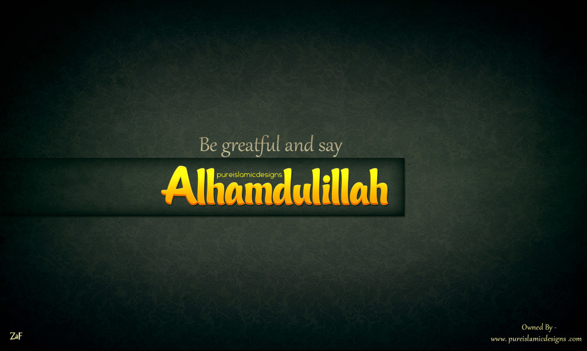

Quem é Abudo Ussene Ija Hassan
Auto Biografia
Respondo pelo nome de Abudo Ussene Ija Hassan. sou um jovem de 24 anos de idade aspirante a desenvolvedor web, com o sonho de crescer na area da ciencia da computação. Sou estudante do curso de informatica com o o Minor de engenharia de Redes de computadores. Esta pagina em expecifico foi desenvolvida com o proposito de ilustrar um coupo das minhas habilidades e com uma especie de CV, Com os dados que julguei serem relevantes, Para futuras propostas.
Fui criado pela minha mãe e os meus avos, ate aos 4 anos de idade. No Ano 2003 o meu avo perde a vida, por motivos de doença diabetes.
Apos a morte do meu avo, tive de migrar para provincia de Cabo Delgado, para vive com a minha tia irma da minha mãe. Por decisão do meu avo, pois a minha mãe era muito nova e ainda estava terminar os seus estudos. Aos 5 anos de idade migro para provincia de Cabo Delgado, fui viver com a minha tia e tio, o marido da minha tia
Por la eu tive o privilegio de vivi e crescer com os meus primos os filhos da minha tia, e juntos fizemos o ensino fundamental na Escola Primaria do 1 e 2 grau de Unidade
Sou o primogenito por parte da minha mãe, e tenho um total de 2 irmãos por parte da minha mãe.
Quanto aos primos são um total de 4 primos os filhos da minha tia e mais 1 prima a primogenita do meu tio
Os meu Avos são originarios da provincia de Cabo Delgado, migrarao para provincia de Nampula onde tiveram os seus filhos num total de 7 filhos, Dos quais ainda vivem 3 filhos. Perderam a vida 4 filhos
Dos 3 filhos ainda vivos, um deles e a minha mãe, tia , e tio. oprimogenito e mais velho dos tres
Bom tenho um total de 6 primos,sendo 4 filhos da minha tia e com os quais passei a minha infancia toda.Fomos criados e educados pela minha tia, que eu considero como uma mãe. E ainda sobram as minhas 2 primas filhas do meu falecido tio, elas são mais novas que eu e tambem recidem em Nampula
Sou muito grato a Deus pelos primos e parentes que tenho, nem sempre estamos justos mas eles tem me apoiado sempre que preciso e sempre posso contar com eles para qualquer coisa.
Alhamdulillah (Louvado seja Deus),
Agradeço a Allah, o Clemente, o Misericordioso, por todas as bênçãos e favores que Ele concedeu em minha vida. Sou grato pelo dom da vida, pela saúde, pela família e por cada oportunidade que Ele me proporcionou.
Subhanallah (Glorificado seja Deus), por Sua infinita sabedoria e misericórdia, que nos guia e nos sustenta em todos os momentos. Que possamos sempre lembrar de agradecer e louvar a Allah em cada passo que damos.
Allahu Akbar (Deus é o Maior), que Ele continue a nos abençoar, proteger e guiar no caminho da retidão. Que nossas ações sejam sempre para agradá-Lo e que possamos ser instrumentos de Sua paz e bondade neste mundo.
Insha'Allah (Se Deus quiser), que possamos continuar a receber Suas bênçãos e viver de acordo com Sua vontade.
Amin.
Com gratidão e louvor
Abudo Ussene Ija Hassan
Alhamdulillah
Orientacao Religiosa
Islamica
